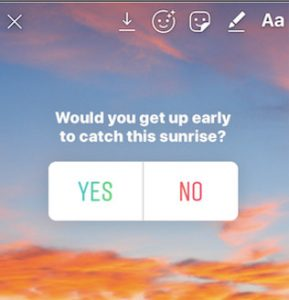
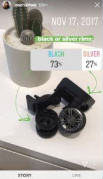
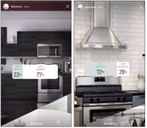
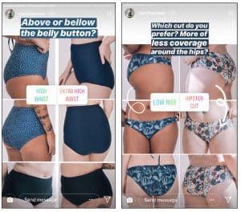
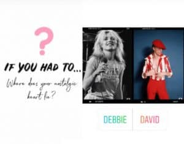

Are you using Instagram polls yet?
If you’ve been searching for a reliable way to engage your audience and drive results for your social media campaigns, then you can’t go wrong with Instagram Stories. These days, people love Stories because they help them to learn more about a brand, interact with a company, and see behind the scenes of their favourite organizations.
Around 500 million stories are posted on Instagram every day. What’s more, 50% of brands already say that they use Instagram Stories to connect with customers.
Whether you’re one of those brands that already rely on Instagram Stories, or you’re just on the verge of getting started, it’s important to make sure that you know how to use all of Instagram’s exceptional features to your advantage. For instance, Stories aren’t just a place to share exciting content with your followers; they can also be an environment for launching engaging conversations, or even learning more about your audience.
All you need to do to tap into the true potential of Stories is learn how to make a poll on Instagram. Fortunately, we’re here to help.
How To Make A Poll On Instagram
Like most Instagram features, Polls are designed to help you engage with your audience.
Rather than just throwing content at your followers and hoping they’ll respond with likes and comments; you actively boost your chances of engagement by asking enticing questions. For instance, you might ask which of your top-selling products your customers like best, or how they feel about a trending discussion.
Polls only allow you to give people one of two options to choose from when they’re answering your questions. However, that’s still enough to provide you with some valuable insights into what your audience is thinking. So, here’s how to make a poll on Instagram.
- Tap on the stickers icon in the top right of your screen – the thing that looks like a peeling smiley face
- Tap on the Polls icon (This says “Poll”)
- Add your questions and the responses that your audience can choose from. The default is “Yes” or “No,” but you can get creative and use emojis or customized text too.
- Publish your poll and wait for the results

Your Instagram poll will last for 24 hours- just like a standard Story. However, you can always keep it alive for longer by adding it to your Stories Highlights reel too.
Getting The Most Out Of Your Instagram Polls
Instagram polls work best when you use them to target a specific goal or outcome.
For instance, if you aim to increase engagement, then you might just use your Instagram poll questions to get people talking about a trending topic. On the other hand, if you’re trying to drive referrals to your website, then you might ask your audience members to “swipe up” on your poll to visit your website and get extra information.
Additionally, it’s worth noting that like other aspects of your Instagram Stories, you can also gather useful analytical insights from your Instagram polls.
By tapping into your poll, you’ll be able to see how many people saw your survey, and who viewed it too – just like you can with Instagram Stories. You’ll also be able to gather useful insights from your poll results which could help you with planning future content campaigns.
Here are some of the ways you can use your Instagram poll questions to ramp up your social media strategy.
1. Source Customer Feedback
Want more insights from your target audience? Instagram poll questions are a great way to get them. If you’re looking for information on how your audience feels about your products, or what they’d like to see you produce next, then the best way to learn is to speak to your customers. Instagram Stories polls are an excellent tool for businesses that want to collect feedback, ideas, or inspiration.
For instance, you could:
- Ask your customers whether they love or hate your new dress design
- Get votes on what your next product should be
- Have people choose their favorite version of a new product before it rolls out
Getting insights from your audience is excellent for making sure that you’re investing in the products and ideas that are most likely to generate value for your brand. For instance, influencer and celebrity hairstylist Jen Atkin used polls to get her audience’s opinions on features that she would later include in her new line of luggage items:

If your audience feels as though they’ve had a hand in building a new product, they’re far more likely to want to buy it when it’s available in-store. What’s more, they’ll respect your company more because they’ll see how much you value their input and ideas.
2. Drive Website Traffic
There’s a good chance that there’s more to your social media strategy than a simple Instagram campaign. You’ll probably want to drive traffic back to your website too. After all, that’s likely where your products and purchasing options live. Fortunately, Instagram added the option to include links in your Instagram Stories way back in 2017. That means that you can cross-promote your site with relative ease. Since links in Stories first emerged, brands of all sizes have been taking advantage of them.
Take a look at this Story shared by the Who What Wear team, for instance. The company wanted to drive more customers back to their website where they could see the latest articles on trending fashion news. To do that, the company created a Story that asked How much Meghan Markle’s tour wardrobe cost. When people swiped up for the answer, they were directed back to the Who What Wear website.
This was a fantastic opportunity for the brand to show their customers that they had diversity to offer in their content, and it allowed them to attract consumers from different backgrounds too.
3. Show Off Your Product Catalog
If you’re already active on Instagram, then there’s a good chance that you’ve got some visual products that you want to show off to the world. One of the best ways to do that is to implement your products into your Instagram polls. For instance, leading Swedish furniture company, IKEA USA, used their Instagram poll questions to ask users how they felt about certain kitchen products and items, all while showing off their latest range.
By combining their product portfolio with an Instagram poll strategy, Ikea was able to gather useful information about the kind of items their audience was looking for, while simultaneously promoting their wares.

At the same time, the poll structure also meant Ikea’s pictures seem less blatantly advertorial than they might have done if they were just placed alongside the other content on Ikea’s feed. In a world where customers are less likely to enjoy being directly “sold at,” this subtle approach works wonders.
4. Get to Know Your Audience
Engagement is a crucial part of any marketing campaign today. If you want your audience to fall in love with your brand and keep coming back for more, you need to get them engaged. One of the best ways to do that is to get to know the people that are following you as well as possible.
Asking your customers questions about what they like and dislike about you, your products, brand, or industry, is a great way to gather information for future campaigns. The more you learn, the easier it will be to build strategies for advertising that will appeal to your target customer in the future. For instance:
- Would they rather see pictures or videos on Instagram?
- Do they like a specific color more than another?
- What kind of style are they looking for?
- Do they want Q&As or How-To videos?
The swimwear brand, Mimi Hammer, gave an excellent example of how you can use an Instagram Poll to learn about your audience by asking customers what sort of designs they preferred most. Although the company was just sending out a customer survey, the playful format made it easier for them to gain real data from their target audience.

Most people would prefer to respond to an Instagram poll than fill out a form sent via email or click on a link distributed to their smartphone.
5. Enlighten Your Audience
Usually, whenever a company decides to follow or interact with a brand online, it’s because they believe that they’re going to get some value in return. That value might come in the form of entertainment, insights, or even useful information.
If you’re the kind of company that wants to be known as a thought leader in your industry, then Instagram Polls can be an excellent way for you to share your knowledge with your followers. For instance, one of the world’s leading meditation apps, Headspace, used their Instagram poll questions to educate their users about mindful eating practices:

Remember, although learning how to make a poll on Instagram can be a great way to gather information from your audience, it can also be a good way to give knowledge back too. The more value your clients get from your brand – even on social media, the more they’ll want to interact with you in the future.
6. Entertain Your Audience
Aside from educating your audience, you can also use your Instagram poll questions to provide your followers with some casual entertainment. After all, the majority of the people you interact with on Instagram will be looking for just a fun way to spend the time. If they can rely on you to give them a bit of extra entertainment when they’re browsing through their newsfeed, they’ll be more likely to fall in love with your company.
Additionally, being entertaining with your Instagram polls is also a chance for you to show off your personality with a human approach that goes beyond the basic corporate image that most businesses have to share. For instance, Fan Club Clothing entertained their audience and got them engaged by asking them where they’re more likely to plant their fan-club flag – with David or Debbie:

Ask yourself whether you can host any fun games or competitions through your Instagram Stories that will get people excited about checking your page for updates. The key to success, the Fan Club Clothing example shows, is thinking about the kind of content that’s most likely to appeal to your audience and keeping it relevant. Don’t just jump on a bandwagon because other people are doing it if it doesn’t make sense for your business.
7. Have Some Fun With An Emoji Slider
Finally, remember that using Instagram polls to have some fun and interact with your audience doesn’t have to mean asking them a bunch of basic yes or no questions. Instagram recently updated their poll offering to ensure that you can get even more information from your target audience with Emoji sliders.
A slider allows you to give your customers a more comprehensive range of options on how to respond to a particular question. For instance, if you’re trying to gauge a general feeling towards your new product line, you could ask people how much they “love” your new collection and allow them to slide an Emoji heart from a scale of 0 to 100.
Environmental company Oceana combined fun with education with their approach to Instagram poll questions, by using an Emoji slider to ask followers how much food they think a manatee could eat in 24 hours:
Making The Most Of Instagram Polls
These days, there are plenty of new and exciting ways that you can interact with your audience through stickers and polls on Instagram stories.
However, learning how to make a poll on Instagram is just the first step. You’ll also need to make sure that you’re making the most out of your campaign by asking questions that resonate with your audience. Use our ideas above to transform your social media strategy by conversing with your target audience. Don’t forget to sign up for the SocialFollow newsletter for more tips, insights, and information too!


2 Comments